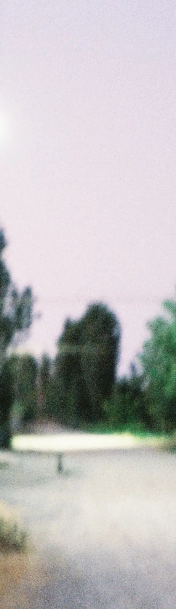
Sometimes I fall apart
Experimental film
2024
My body is my home; it is strong and endures everything that happens to me. But sometimes I feel the contours of my body dissolving, as if one part of it is melting away, and until I see myself in the mirror, I don’t realize that this isn’t real. It’s hard to put a name to this state. It just happens sometimes and then passes.
My body is female; that is how the world has defined it. So my body’s fate is to endlessly attract men’s attention, even though I never wanted that. Even though I don’t feel like the person the world has labeled me as. Sometimes certain parts of my body become burning islands of shame. I want to cut them out of myself or hide myself completely, to protect them?
These are just fragments of how I sometimes feel living in my body-home. I wanted to understand what other women experience in their bodies. What their bodies have felt, seen, and learned; what their bodies intuitively want to run away from; how resilient their bodies are.
I asked the women to share their thoughts on how they feel in their own bodies. Almost every one of them shared experiences of sexualized violence or harassment. As I internalized their stories, I created movements with my own body to feel those sensations and reactions through my own physicality. My friend, the choreographer Nastya Garbuz, helped me with this.
Especially for the film, my friend, musician Amalia Aybusheva, composed music that would reflect the progression of events in the piece—from tension, anxiety, and turmoil to healing. And Dinora became the voice of this work.
This piece was created by a large group of people, and I simply brought it all together into a single expression.
Commissioned by Nemolchi.uz
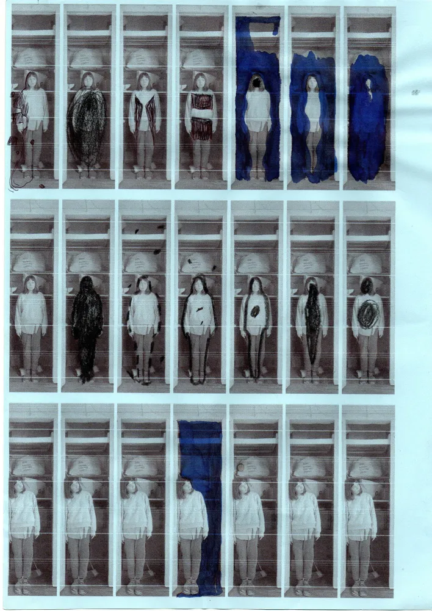
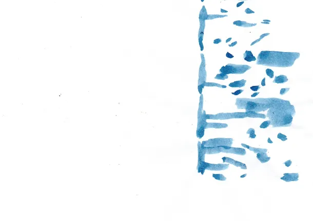
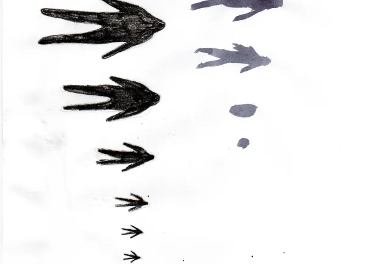
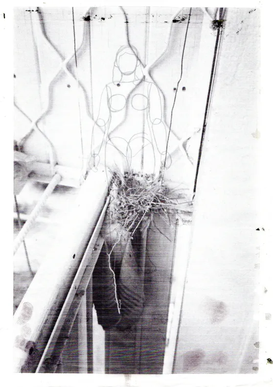
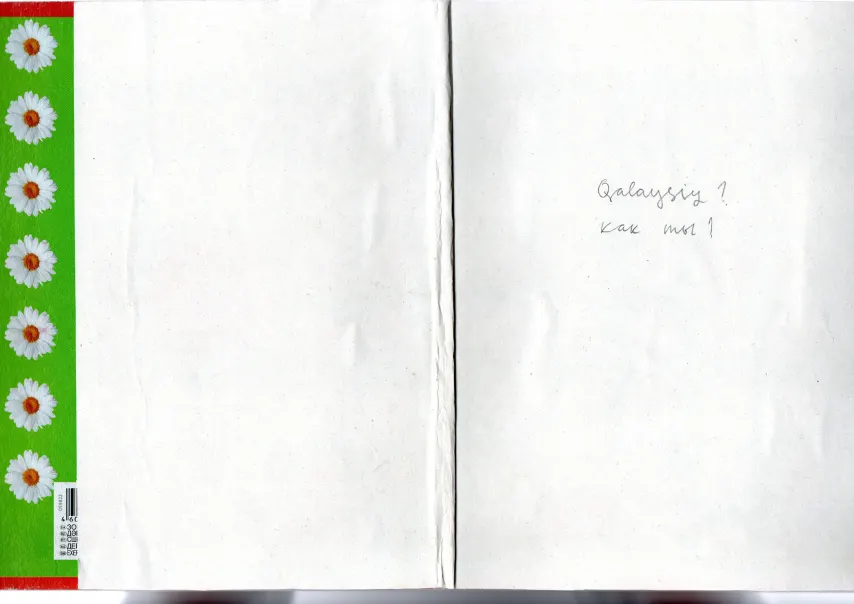
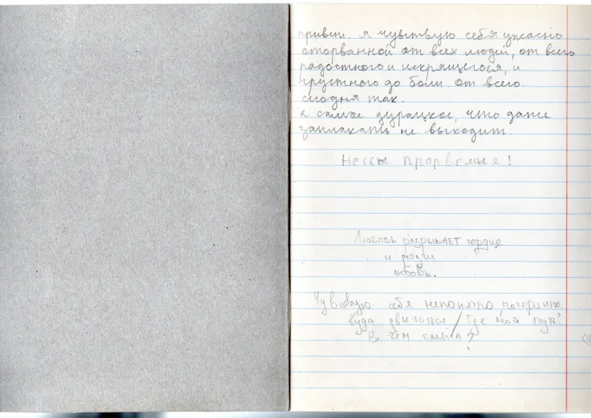
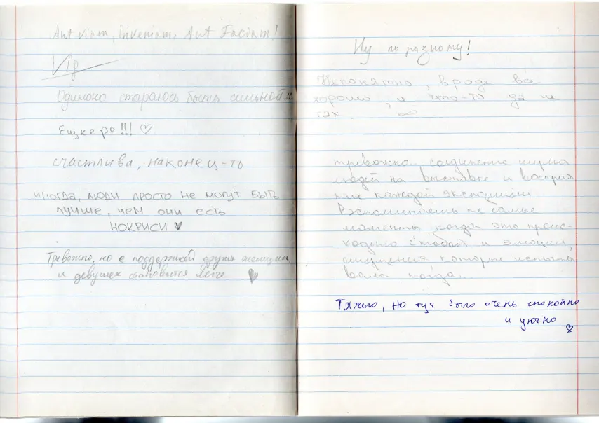
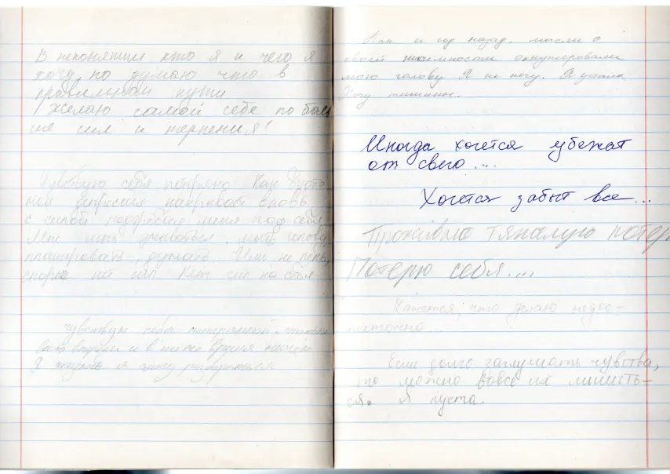
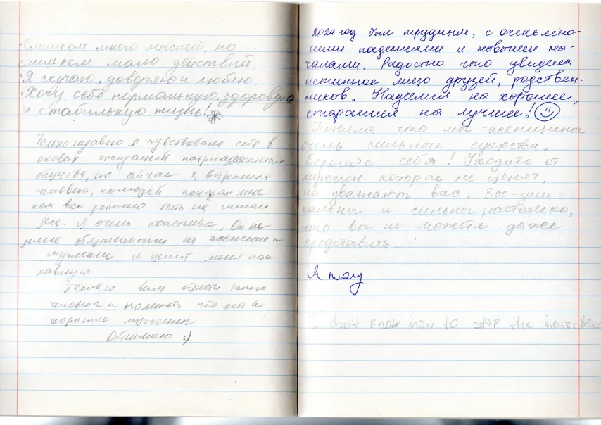
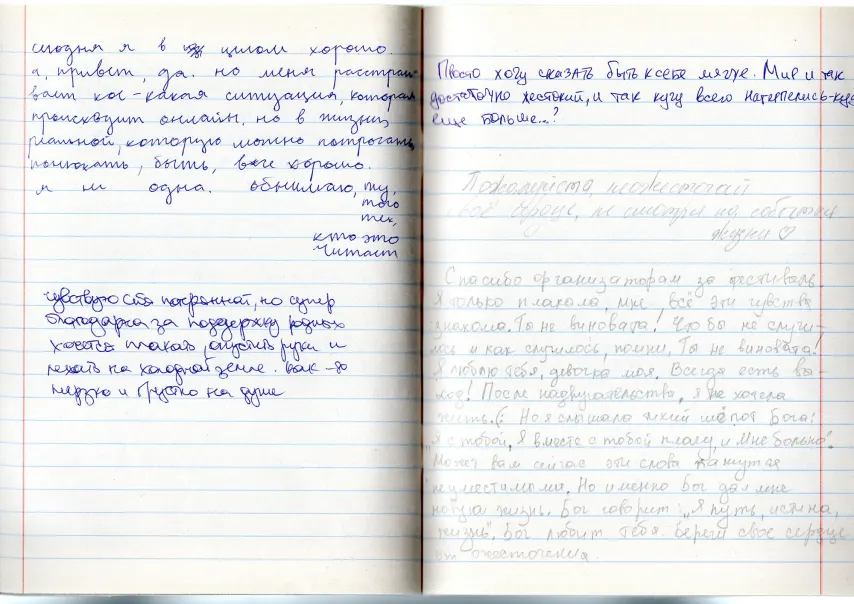
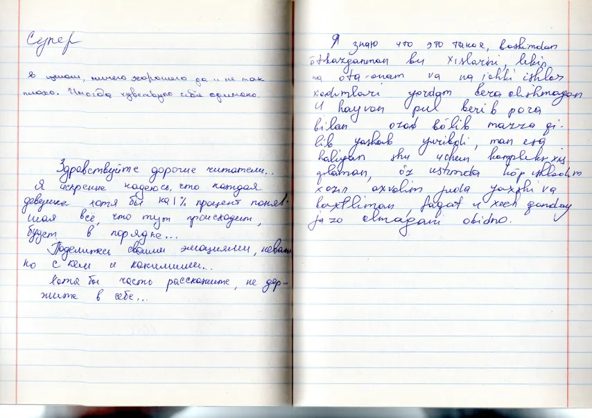
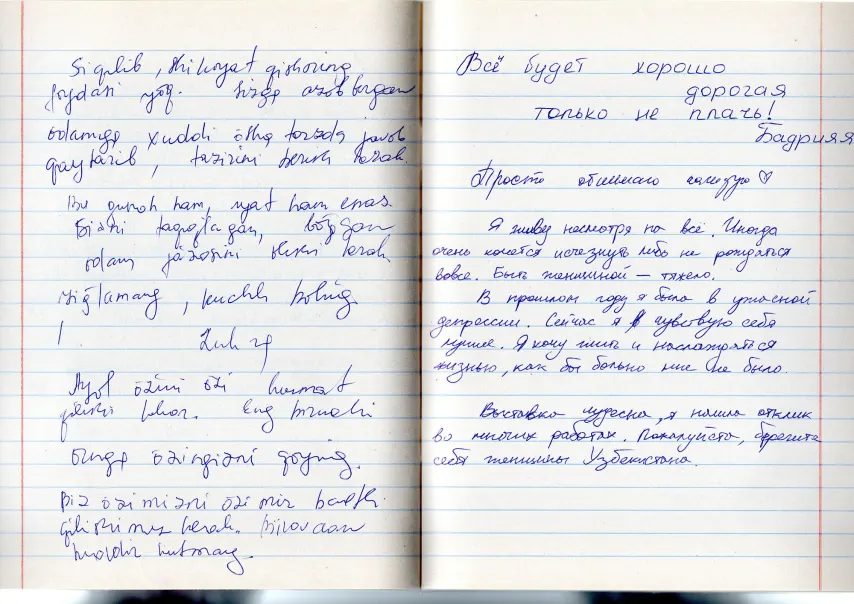
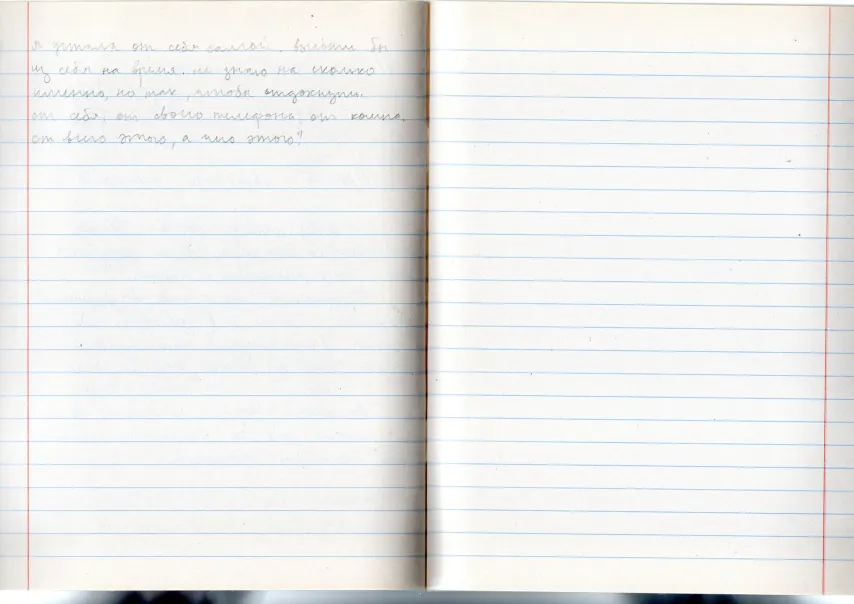
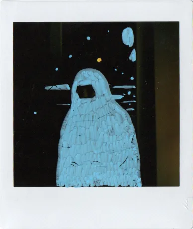